Create a tolerance table
There must be fit dimensions on the active sheet before you can create a tolerance table.
-
Click a working sheet tab or the 2D Model sheet to display the sheet that contains the fit dimensions.
-
Choose Home tab (or Tables tab)→Tables group→Tolerance Table
 .
. -
On the Tolerance Table command bar, from the Selection Method list, choose one of the following methods:
-
To select all of the fit dimensions on the sheet, select the By Active Sheet option from the list
-
To select all of the fit dimensions in a drawing view:
-
Choose the By Drawing View option from the list.
-
(Optional) To include dimensions inside a drawing view as well as attached to a drawing view, click the Properties button on the command bar, and then on the Options tab, select Include dimensions in the drawing views.
-
Click one or more 2D views or part views.
-
-
To manually select one or more fit dimensions on the active sheet:
-
Choose the By User Selection option from the list.
-
Click one or more individual dimensions, or drag a box around a group of dimensions to select them. You can remove a dimension from the selection set using Shift+click.
-
-
-
To adjust the format of the tolerance table before you place it, click the Properties button, and then make changes in the Tolerance Table Properties dialog box.
-
On the command bar, click Accept
 .
. -
On the drawing sheet, click to place the table.
-
Fit dimensions defined as Fit Type=Hole/Shaft occupy two rows in the table. The first row is for the Hole Class tolerance values and the second row is for the Shaft Class tolerance.
Example:A fit dimension with hole/shaft tolerance is defined on the Dimension command bar using the following options:
Dimension Type=Class (1)
Fit Type=Fit Hole/Shaft with tolerance (2)
Hole Class=H7 (3)
Shaft Class=f6 (4).
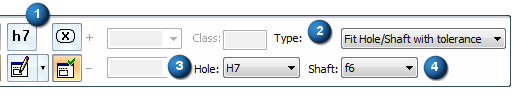
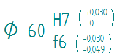
The dimension is referenced in the tolerance table like this:
Value
Class Fit
Upper and Lower
Stack ToleranceUpper Stack Tolerance
Lower Stack Tolerance
Upper and Lower
Limit ToleranceUpper Limit
ToleranceLower Limit Tolerance
60
H7
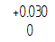
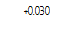
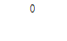
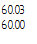
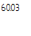
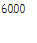
60
f6
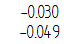
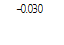
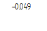
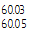
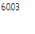
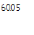
-
The default columns displayed for the ISO standard tolerance table are Value, Class Fit, Upper and Lower Stack Tolerance, Upper Limit Tolerance, and Lower Limit Tolerance. You can apply user-defined table formatting using the Saved Settings button
 on the command bar.
on the command bar. -
You can add and remove columns by selecting the Properties button, and then clicking the Columns tab. For more information, see Using the Columns tab.
-
To improve the legibility of stacked tolerance values, you can change the font size (text size) of the data cells in the table. To learn how to do this, see Change the font size of table cells with direct edit.
You also can change the appearance of individual elements of a table—titles, columns, headers, and data cells—without changing the table style. For more information, see Editing a table directly.
How do I
Add or remove dimensions in a tolerance tableLearn more
Tolerance tablesLook up more details
Tolerance Table Properties dialog boxOptions tab (Tolerance Table Properties dialog box)